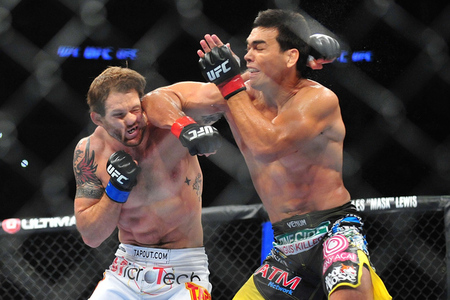

Codo Ascendente

Esta tecnica de codo es similar al uppercut tecnica de puños, este golpe va dirigido a la mandibula una de las zonas más propensas a provocar un K.O.
Codo Descendente

Este tipo de codo es lanzado en las distancias cortas propinandolo o bien en el craneo o tras una esquiva dejando al rival de espaldas, se puede golpear en la misma.
Codo circular
El golpe circular realizado con el codo se puede ejecutar a dos alturas, a media altura tras realizar una esquiva de un crochet, realizando un desplazamiento para salir de la zona de contragolpeo del rival, la otra forma seria en la parte superior cuando el rival a bajado la guardia y puedes realizar un contragolpe.